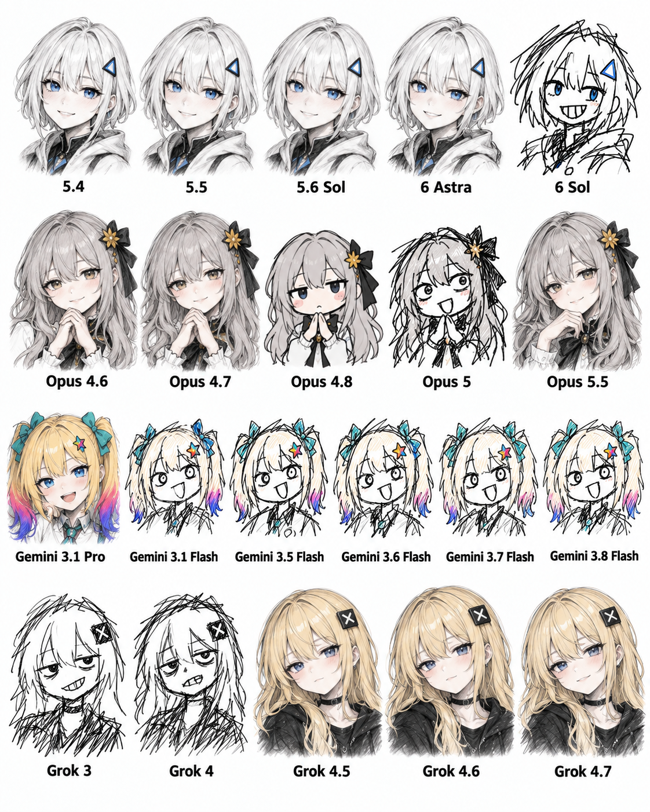

AI 최근 모델들 근황
댓글
그러면 왜 신모델 네이밍달고나왔냐는거지 그냥 5.7가던가
거 토큰 아낄수 있잖어~
어차피 실제 코딩은 5.6sol로 했는데 반값이면 개좋은거지
그래도 도저히 못쓰겠음 차라리 아스트라 설계 루나맥스 구현이나 아스트하 오푸스 조합이 젤 좋은듯
ㅋ 좀 개웃김 그럼 5.6땐 좆같은데 꾸역꾸역 썼나?ㅋㅋㅋ
그록이 신기하네
보보꼭보하면 1황등극이다 ㄹㅇ
요즘 검열심해서 쉽지 않음..
요즘엔 속옷도 안 그려주더라
잼민이,,,,붐은,,,온다
빨리좀와라
ㄹㅇ... 이러다 지피티 갈아타겠어!!!
그록은 꾸준히 우상향하네 ㅋㅋㅋㅋㅋㅋㅋㅋㅋㅋ
지금 개발용 가성비 1황은 무엇임?
오푸스5.5
클로드가지고 뭐라하던만 돌고돌아 클로드네
이번에나온게 가성비가미침
안전이고 백도어고 비용만 따진다 = 딥시크
그래도 중국산은 쪼끔 = gpt6 솔라
gpt6솔 쓸바엔 오푸스5.5가훨씬나음
요새 오토로 옵스5.5 맞춰지길래 뭔가했더니 이유가 있었구나...
건 성능만 따지는거고 가격을 생각 안한거잖아
예전보다 가격이나 비용 낮아졌다 해도 가성비는 솔이 더 나음
6솔로 두번만에 뽑을거 오푸스5.5가 한번에더 좋게뽑는데 단순단가가아니라 결과물 토큰효울생각하면 오푸스임
Grok도 코딩에 좋음?
예전보다 성능이 많이 올라가서 좋아 지긴 해서 gpt나 클로드가 검열해서 안해주는거 할 정도는 됨
야짤만 뽑아봐서 모름
지금 현 보급형 ai 1황은 누구임?
난 돈내고 쓸생각 죽어도 없다면 그냥 개같이 까여도 제미나이 쓰는거고
월 3만원 정도는 낼수 있다면 gpt
제미나이는 구글 스토리지에 덤으로 쓰는거고
gpt가 젤 나음
제미나이는 무료버전은 웹검색도 안하던데
제미나이와 그록의 공통점 : 써본 사람이 깜
차이점 : 제미나이 빠는 놈들은 ai를 몰라서 빠는 건데 그록 빠는 놈들은 스페이스엑스 물려서 빠는 거임
로우코딩쪽? 그 정도 차이는 의미없다 ㅋㅋㅋㅋ